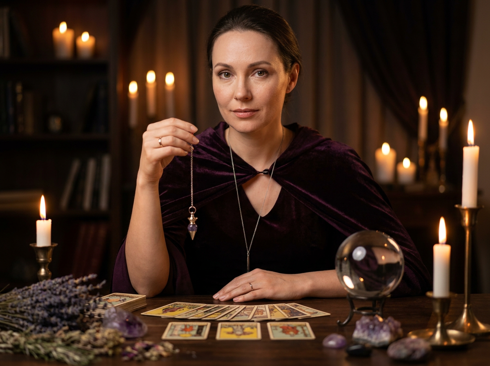
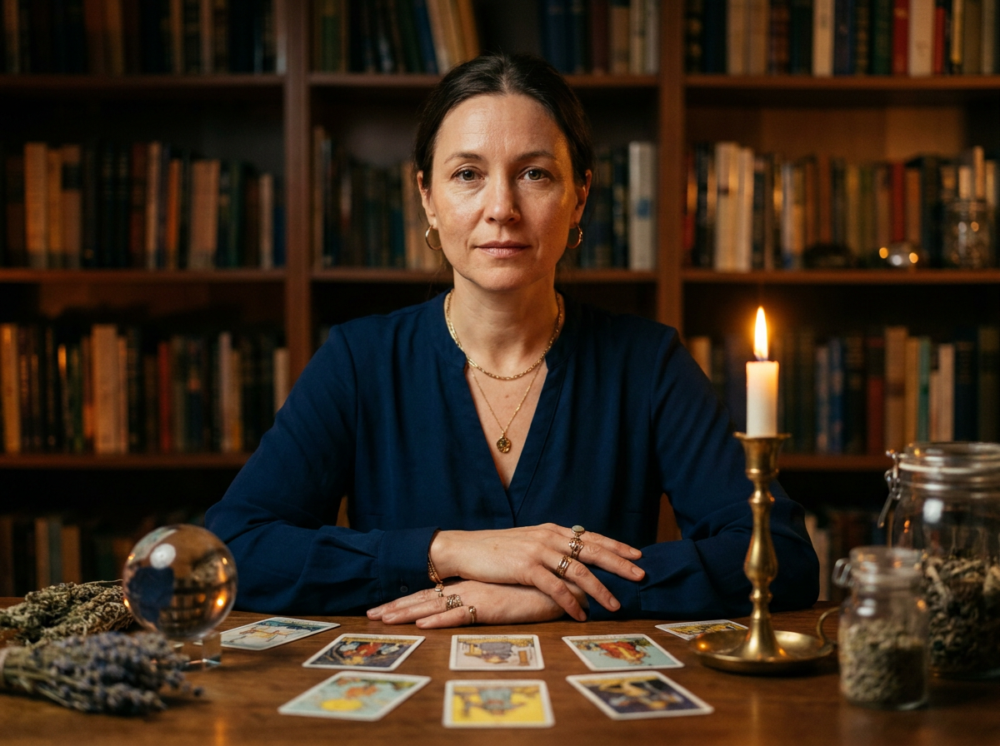
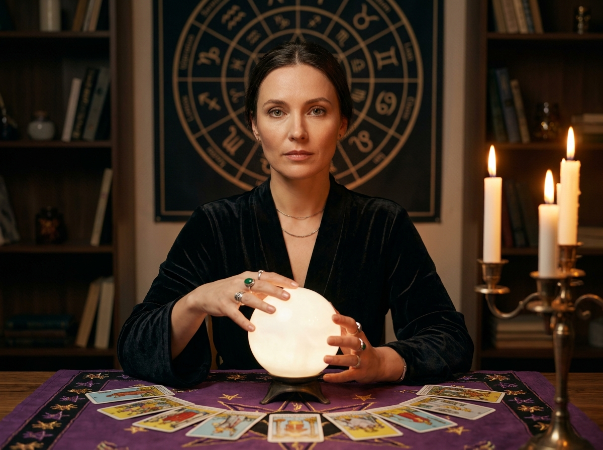
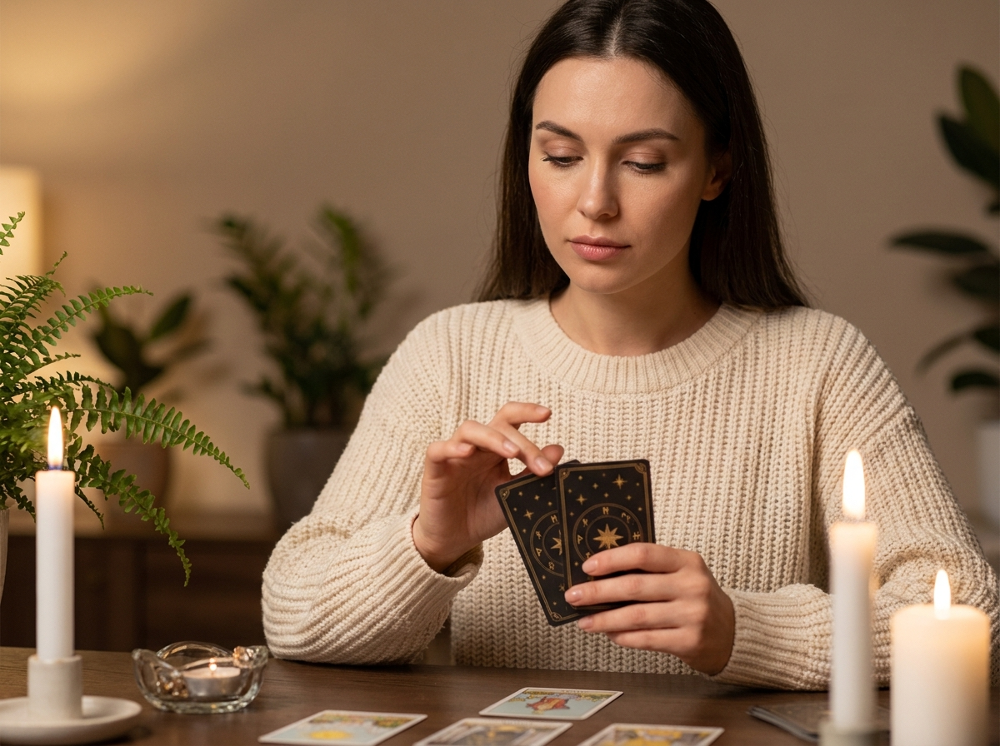
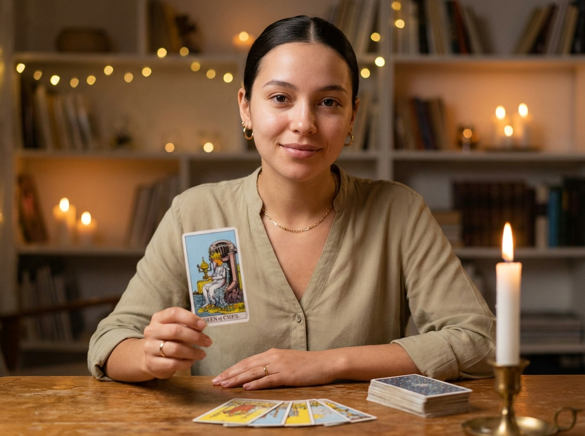
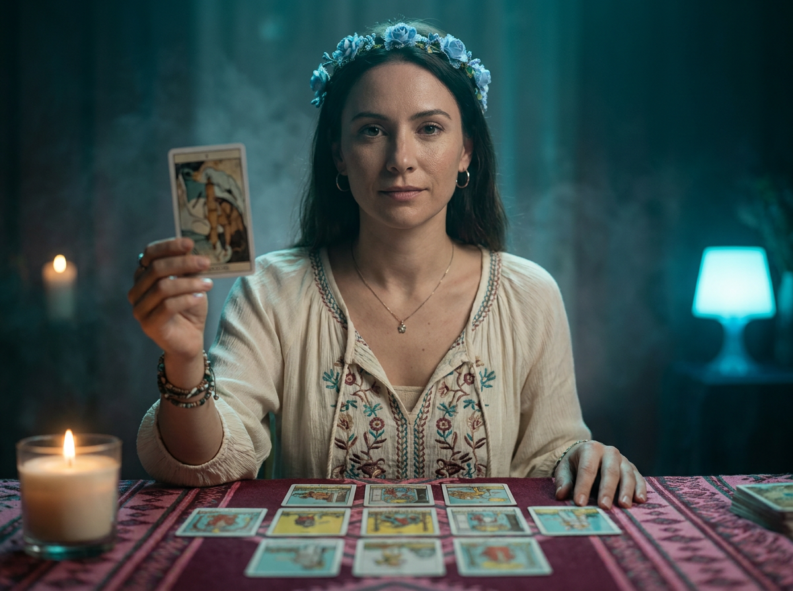
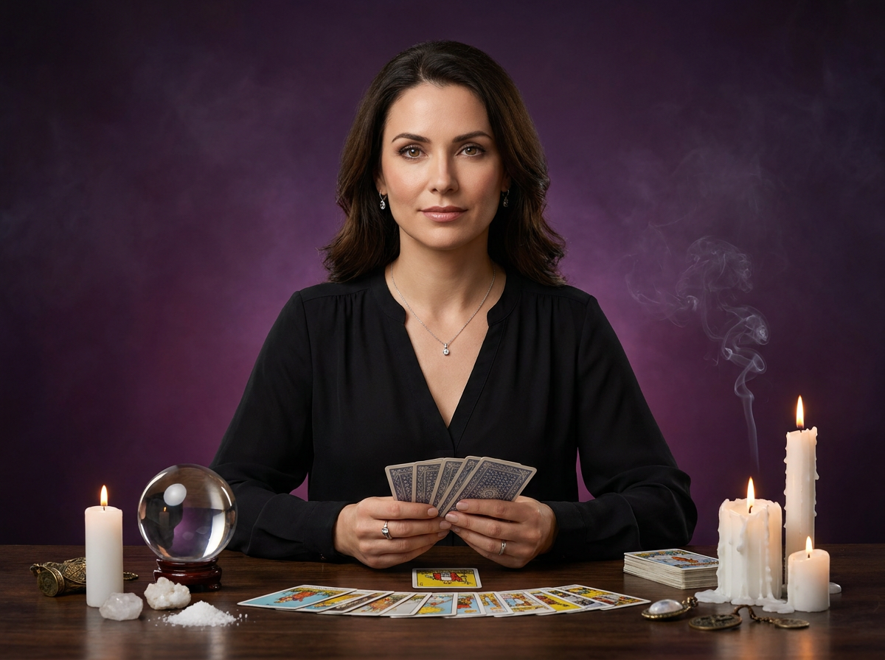
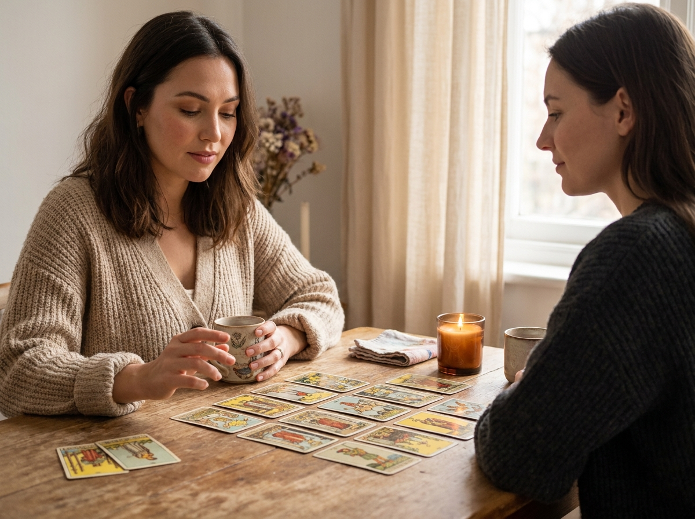
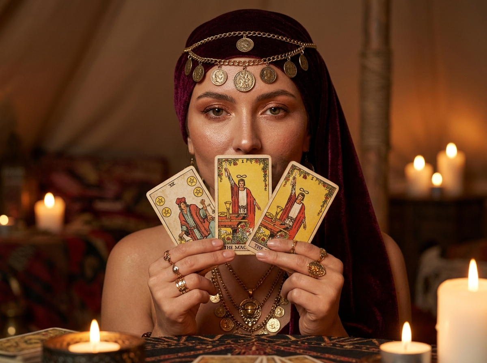

ИИ-фото для таролога: 10 промптов для нейросети

Для таролога фото часто становится частью личного бренда, но студийная съёмка требует времени, денег и подходящей атмосферы. Генерация помогает быстро получить выразительные портреты, рабочие сцены и образы для соцсетей, сайта или аватарки.
В подборке — десять сценариев: от спокойного домашнего расклада и кабинета с книгами до студийного портрета, чтения карт для клиента и мистического образа с бордовым платком. Каждый промпт можно использовать как основу и адаптировать под свой референс.
Как сгенерировать такое фото: пошагово
Нужен снимок анфас при ровном свете, лицо в кадре целиком, без тёмных очков и головных уборов. Разрешение от 1000 пикселей по короткой стороне. Чем чётче исходник, тем точнее модель повторит черты.
Выберите сценарий ниже и нажмите «Копировать» — текст уйдёт в буфер целиком, вместе с командой сохранения внешности. Эта команда стоит первой строкой и отвечает за то, чтобы на выходе было ваше лицо, а не случайное.
Кнопка «Сгенерировать» рядом с каждым промптом открывает модель в новой вкладке. Nano Banana Pro работает с референсом лица — в отличие от моделей, которые генерируют портрет с нуля и узнаваемость теряют.
Промпт — в поле ввода, портрет — через загрузку референса. Порядок значения не имеет, но без референса команда сохранения внешности работать не будет: модели нечего сохранять.
Для сторис и ленты берите 9:16, для превью и обложек — 4:3. Первый результат редко идеален: если поза или свет ушли не туда, поправьте соответствующую часть промпта и запустите заново. Обычно хватает двух-трёх итераций.
10 промптов для генерации
1. Таролог с маятником
Строго сохранить внешность по загруженному референсу: черты лица, пропорции, мимику и текстуру кожи без изменений. Фотореалистичное кинематографичное фото в вертикальном формате, студийное качество, реалистичные материалы, естественная кожа и мягкий направленный свет. Девушка-таролог сидит за столом; лицо, форма глаз, бровей, носа, губ, овал и пропорции должны точно соответствовать загруженному референсу, без изменения внешности. На ней тёмно-фиолетовая бархатистая накидка или платье со сливовым оттенком, мягким блеском ткани и аккуратным глубоким V-вырезом без откровенности. Макияж спокойный: ровный тон, мягкая линия глаз, натуральные губы. Выражение слегка задумчивое. В правой руке, ближе к левому краю кадра, она держит тонкую цепочку с маленьким металлическим или кристальным кулоном, похожим на маятник или амулет. На пальце тонкое кольцо, на шее возможна изящная цепочка с кулоном. На столе разложены карты Таро, горят свечи, лежат небольшие кристаллы; тёплые блики отражаются на металле и стекле, фон мягко размыт.
2. Кабинет с книгами

Строго сохранить внешность по загруженному референсу: черты лица, пропорции, мимику и текстуру кожи без изменений. Вертикальный фотореалистичный кинематографичный портрет женщины-таролога по грудь или до пояса. Сохранить лицо по загруженному референсу: индивидуальные черты, форму глаз, бровей, носа, губ, овал, мимику и пропорции. Камера на уровне глаз либо немного ниже, резкость распределена между лицом, руками и картами. Сцена происходит в уютном кабинете-библиотеке: на заднем плане книжные полки с книгами и декоративными предметами, фон сильно размытый, shallow depth of field, мягкое боке. Свет тёплый янтарный от горящей свечи, дополненный слабым рассеянным источником; на металле, стекле и воске видны натуральные блики и тени. У девушки естественный макияж, аккуратные брови, тонкая подводка, тёплые тени и матовые губы нюдово-розового оттенка. Выражение спокойное, на лице мягкая уверенная улыбка. Перед ней деревянный стол с колодой Таро, свечой, небольшим стеклянным сосудом и украшениями в мистическом стиле.
3. Кристальный шар и карты

Строго сохранить внешность по загруженному референсу: черты лица, пропорции, мимику и текстуру кожи без изменений. Создай вертикальное фотореалистичное изображение с портретом и частью окружения, ultra realistic, cinematic lighting, natural skin texture. Женщина-таролог показана по грудь или до пояса за столом; в центре композиции находятся её лицо и прозрачный кристальный шар, рядом лежит расклад Таро. Лицо точно повторяет загруженный референс: не менять глаза, брови, нос, губы, овал, мимику и пропорции. Она смотрит прямо в камеру, выражение уверенное и спокойное. Макияж аккуратный: ровный тон, тёплые коричнево-нейтральные тени, подчёркнутые ресницы, естественные губы. На ней тёмная одежда с мягкой фактурой, на шее тонкая цепочка с маленьким кулоном. По обе стороны стола стоят свечи в стеклянных подсвечниках, рядом лежат карты и небольшие кристаллы. Фон симметричный, с полками или декоративными предметами, слегка расфокусирован. Лицо, шар и ближайшие карты резкие; в шаре реалистичные отражения, в воске видны фактура и следы плавления.
4. Домашний расклад при свечах

Строго сохранить внешность по загруженному референсу: черты лица, пропорции, мимику и текстуру кожи без изменений. Фотореалистичное вертикальное фото в спокойной домашней атмосфере. Камера расположена на уровне стола, план medium или medium close-up: видны лицо женщины-таролога, её руки и часть столешницы с картами и свечами. Внешность должна соответствовать загруженному референсу без изменений индивидуальных черт, формы глаз, бровей, носа, губ, овала лица, мимики и пропорций. Девушка смотрит вниз на расклад, её выражение сосредоточенное и тихое. Макияж натуральный и ухоженный, на ушах маленькие серьги-пусеты или тонкие серьги, на шее изящная цепочка с небольшим кулоном. Освещение мягкое, тёплое, желтовато-золотое, с лёгкими тенями и естественными бликами на стекле, металле и неровной поверхности свечного воска. В центре внимания находятся руки и одна открытая карта; лицо, руки и карта в резкости, дальний фон и предметы слегка размыты. Добавь тёплое боке, реалистичную деревянную поверхность стола, несколько свечей и аккуратно разложенную колоду Таро.
5. Карта Королева Кубков

Фотореалистичный портрет молодой женщины-таролога, сидящей за столом; вертикальный кадр, камера на уровне груди или лица. Точно сохранить внешность по загруженному референсу: форму глаз, бровей, носа, губ, овал лица, естественную мимику и пропорции, без ретуши, меняющей черты. Девушка прямо смотрит в объектив и слегка улыбается. В одной руке она держит карту Таро так, чтобы изображение было полностью читаемым: классическая сцена Королевы Кубков, женщина в синем наряде с золотыми деталями. Второй рукой она касается колоды или лежащих на столе карт. На тарологе светлая оливково-бежевая рубашка с воротником или V-вырезом, аккуратно уложенные волосы с небольшим объёмом, серьги-кольца, тонкая цепочка и изящное золотое кольцо. Макияж мягкий, кожа ухоженная, брови аккуратные, губы естественные. На столе лежат карты, небольшая свеча и стеклянный предмет. Используй мягкий рассеянный свет, натуральные тени, резкость на лице, руках и карте, без искажённых надписей и лишних пальцев.
6. Таро в синем свете

Строго сохранить внешность по загруженному референсу: черты лица, пропорции, мимику и текстуру кожи без изменений. Вертикальное фотореалистичное кинематографичное фото, medium shot: девушка-таролог по грудь или до пояса сидит за столом, на котором лежат карты Таро. Лицо и все индивидуальные черты должны соответствовать загруженному референсу; не изменять глаза, брови, нос, губы, овал, мимику и пропорции. Атмосфера мистическая: холодный синий свет с teal/cyan grading, драматичная боковая подсветка, мягкое боке в глубине кадра. На переднем плане резкие лицо, рука с поднятой картой и ближайшие карты; фон и дальние предметы размыты, shallow depth of field. У девушки выразительные ухоженные брови, аккуратная подводка, холодные синие или нейтральные тени, матовые губы розово-нюдового оттенка. Взгляд направлен немного в сторону камеры, выражение спокойное и собранное. Одежда тёмная, с реалистичной фактурой ткани, на шее тонкий кулон. Добавь свечу с небольшим тёплым пламенем, отражения на металлических деталях и натуральную текстуру кожи. Качество ultra realistic, high detail, без артефактов, лишних пальцев и пластиковой кожи.
7. Минималистичный профиль
Строго сохранить внешность по загруженному референсу: черты лица, пропорции, мимику и текстуру кожи без изменений. Фотореалистичное студийное фото в вертикальной композиции на чистом минималистичном фоне. Женщина-таролог размещена справа в кадре, камера снимает её в профиль или три четверти; голова, плечи и руки видны примерно по пояс. Она опустила взгляд на карты, выражение спокойное и сосредоточенное, губы расслаблены. Сохранить лицо по загруженному референсу: индивидуальные черты, форму глаз, бровей, носа, губ, овал, естественную мимику и пропорции. Кожа ухоженная, макияж натуральный, ресницы подчеркнуты тушью без драматического эффекта. Уши открыты, допустимы тонкие неброские серьги. На девушке чёрный деловой костюм или жакет с V-образным вырезом и лацканами, матовая ткань с реалистичной фактурой. В руках лежит колода Таро, несколько карт разложены на столе. Используй мягкий студийный свет, лёгкую тень под подбородком, нейтральную цветокоррекцию, объектив 85 мм, диафрагму f/2.8 и аккуратное размытие фона.
8. Студийный ритуал

Строго сохранить внешность по загруженному референсу: черты лица, пропорции, мимику и текстуру кожи без изменений. Профессиональная студийная съёмка в вертикальном формате: женщина-таролог сидит за столом и прямо смотрит в камеру, выражение уверенное и спокойное. Лицо максимально точно повторяет загруженный референс, без изменения формы глаз, бровей, носа, губ, овала, мимики и пропорций. В руках она держит несколько карт Таро, на столе карты разложены веером и частично открыты. Рядом стоит круглая хрустальная сфера, вокруг неё — несколько белых свечей с горящими фитилями, каплями воска и реалистичным пламенем. Добавь немного белых кристаллов или соли и лаконичные декоративные элементы в мистической стилистике. На девушке чёрная блуза или платье с V-вырезом, тонкая цепочка с кулоном, кольцо и небольшие серьги. Фон глубокого фиолетово-сливового градиента, в воздухе лёгкая дымка от свечей. Свет мягкий рассеянный, с тёплыми янтарными бликами на шаре, металле и стекле; цветокоррекция кинематографичная, кожа натуральная, детали резкие, без визуального шума.
9. Чтение карт для клиента

Строго сохранить внешность по загруженному референсу: черты лица, пропорции, мимику и текстуру кожи без изменений. Фотореалистичная повседневная сцена в стиле уютного кабинета предсказаний, вертикальный или близкий к вертикальному кадр. Две женщины сидят напротив друг друга за деревянным столом; съёмка сбоку или в три четверти, как lifestyle-фото. Главный акцент — руки таролога и расклад карт на столе, но лица обеих участниц должны оставаться читаемыми. Таролог выглядит мягко и внимательно, смотрит на карты или руки во время чтения. Её лицо точно соответствует загруженному референсу, без изменения индивидуальных черт и пропорций. На ней бежевый или песочный трикотажный свитер либо кардиган крупной вязки, рукава слегка собраны у запястий. Клиентка сидит напротив в нейтральной повседневной одежде. На столе открытые карты, колода, небольшая свеча и чашка чая. Камера чуть выше уровня столешницы, средняя или малая глубина резкости: лица и карты в фокусе, фон мягко размывается. Свет тёплый дневной, естественные тени, реалистичная фактура дерева и ткани.
10. Портрет в бордовом платке

Строго сохранить внешность по загруженному референсу: черты лица, пропорции, мимику и текстуру кожи без изменений. Крупный фотореалистичный портрет женщины-таролога в вертикальном кадре, камера прямо перед лицом, объектив 85 мм, малая глубина резкости. Лицо точно сохранить по загруженному референсу: глаза, брови, нос, губы, овал, мимику и пропорции, без изменения внешности. Женщина смотрит прямо в камеру, выражение загадочное, уверенное и собранное. У неё выразительные глаза, длинные ресницы, аккуратные брови, матовая кожа с лёгким сиянием, акцентный макияж в тёплых оттенках и допустимый мягкий шиммер на веках. Волосы частично скрыты под бархатным бордовым или вишнёвым платком с плотными мягкими складками. По лбу и вискам проходит золотистый ободок из тонких цепочек с монетами и медальонами римского или восточного вида; небольшие круглые подвески обрамляют лицо. Возможны маленькие золотистые серьги. На шее несколько украшений: тонкие цепочки вместе с более массивным этническим элементом. Фон тёмный, нейтральный, с лёгким винным оттенком; мягкий тёплый свет подчёркивает бархат, металл и естественную текстуру кожи.
Что важно учесть в этом стиле
Образ таролога держится не на случайных мистических предметах, а на связке света, жеста и фактуры. Свечи дают тёплые блики, синий свет делает сцену драматичнее, а деревянный стол и книги добавляют ощущение реального кабинета. Если нужен профессиональный портрет, задайте объектив 85 мм, диафрагму f/2.8 и резкость на глазах.
Карты и надписи нейросети часто рисуют неточно. Для обложки лучше просить одну крупную карту без мелкого текста или добавить изображение колоды на этапе монтажа. Референс лица тоже не гарантирует идеального совпадения: обычно требуется несколько генераций и выбор самого удачного варианта.
Идеи для вариаций
- Замените фиолетовый фон на тёмно-зелёный, графитовый или терракотовый.
- Попросите расклад на конкретную тему: отношения, карьеру или решение в сложной ситуации.
- Добавьте интерьер с бархатными шторами, старинным зеркалом или открытым окном в дождливый вечер.
- Смените одежду на белую рубашку, жакет, кимоно или платье с вышивкой.
- Для соцсетей сделайте свободное место сбоку под заголовок и вертикальный формат 4:5.
- Попробуйте разные планы: крупный портрет, кадр по пояс или съёмку только рук и расклада.
Как собрать свой промпт
Начните с формата и композиции: вертикальный портрет, кадр по пояс, профиль или сцена за столом. Затем укажите действие — таролог держит карту, раскладывает колоду, смотрит на клиента или работает с маятником. После этого добавьте одежду, украшения и ключевые предметы, которые должны попасть в кадр.
Свет описывайте конкретно: тёплое пламя свечи слева, холодный источник сзади, мягкие тени под подбородком. В финале задайте технические параметры: объектив 50 или 85 мм, f/2.8, shallow depth of field, реалистичная кожа, резкость на лице и руках. Отдельной строкой укажите ограничения: без лишних пальцев, дублирующихся карт, артефактов и нечитаемых лиц.
Ошибки, из-за которых кадр не получается
- Слишком много деталей. Если одновременно задать десять свечей, полную библиотеку и сложный костюм, нейросеть начнёт смешивать объекты. Оставьте два-три главных акцента.
- Не указан фокус. Без указания резкости лицо может оказаться мыльным, а карта — нечитаемой. Назначьте главный объект и глубину резкости.
- Мелкий текст на картах. Названия арканов и символы часто искажаются. Просите чистую иллюстрацию или добавляйте надписи вручную.
- Противоречивый свет. Янтарный огонь и яркий дневной свет из разных сторон дают неестественные тени. Опишите один ведущий источник.
- Слишком общая внешность. Формулировка вроде «красивая девушка» не помогает повторить референс. Укажите, что лицо, мимика и пропорции должны оставаться неизменными.
Частые вопросы
Как сделать такое ИИ-фото бесплатно?
Можно попробовать Kandinsky и Шедеврум: они доступны бесплатно, но точность работы с референсом лица, позой и мелкими предметами ограничена. Krea AI и Arena.ai позволяют тестировать разные модели, однако бесплатные лимиты, очереди и доступ к загрузке референса могут меняться. Ни один сервис не гарантирует идеальное совпадение лица с первой попытки: закладывайте несколько генераций и при необходимости используйте ручную ретушь.
Как добиться сходства с референсом?
Загружайте чёткий портрет анфас или в нужном ракурсе, без очков, сильных теней и фильтров. В промпте отдельно фиксируйте форму лица, взгляд, мимику и запрет на изменение внешности. Для сложной позы лучше сначала получить правильное лицо, а затем уточнять одежду и окружение.
Почему карты Таро выглядят странно?
Нейросети плохо воспроизводят мелкие символы, рамки и надписи. Просите одну крупную карту, не перегружайте сцену и не требуйте читаемого текста в маленьком кадре. Если нужен конкретный аркан, сгенерируйте сцену без карты, а изображение настоящей карты добавьте позже в редакторе.
Как сделать фото более профессиональным?
Задайте вертикальный формат 4:5 или 9:16, объектив 50–85 мм, диафрагму f/2.8 и мягкий рассеянный свет. Оставьте один главный источник — например, свечу сбоку — и попросите естественную текстуру кожи, реалистичную ткань и неглубокую глубину резкости. После генерации проверьте руки, украшения, глаза и границы предметов.